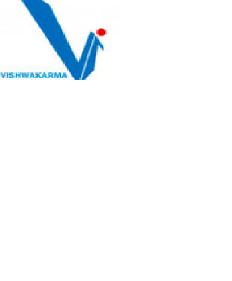

In this example, the image will float to the right in the paragraph, and the text in the paragraph will wrap around the image.
 One of the major landmarks in development of the Institute was conferment of Academic Autonomy by University Grants Commission and University of Pune. The Institute now can design its own curriculum, academic calendar, conduct examination and declare results. The objective of the Institute is to develop entrepreneurs with competence and character who will contribute to the technical and social development of the Country. For this the Institute has introduced Honors / Minor Streams, General Proficiency Courses, Professional Development Courses, Skill Development Courses, Semester Project, Open Electives (which include Psychology, Sociology, Philosophy, Economics, etc.) and Soft skills as a part of the Curriculum. Facilities like fast track course, course dropping, registration for extra credits and Industrial training is also available.